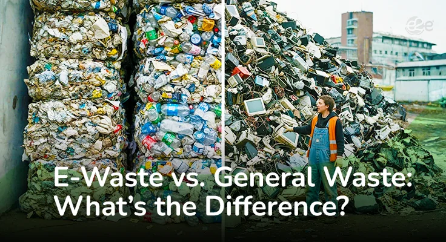

We live in a world where technology evolves faster than we can keep up. Phones, laptops, TVs, and tablets become outdated every few years, and we often don’t think twice before tossing them out. But did you know that disposing of electronic waste (e-waste) the same way we throw away food wrappers or household garbage can be extremely harmful?
Let’s break down the key differences between e-waste and general waste, and why it’s crucial to dispose of them correctly.
E-waste (electronic waste) refers to discarded electrical or electronic devices that are no longer in use, broken, or obsolete. This includes:
If it plugs in, charges, or runs on batteries, it is likely considered e-waste when no longer usable.
General waste is your everyday garbage—items that don’t belong in recycling or compost bins. These can include:
This type of waste usually ends up in landfills or incineration plants.
Improper disposal of electronic waste by burning or dumping in landfills leads to serious environmental damage. E-waste contains toxic substances like mercury, cadmium, and lead, which can leach into the soil and contaminate groundwater, impacting local communities and ecosystems. By promoting safe e-waste recycling methods, we can ensure that e-waste is processed responsibly, preventing the release of these toxins and protecting both human health and the environment.
Throwing e-waste into the general waste stream can have serious consequences. Here’s why it matters:
E-waste contains materials like lead, mercury, cadmium, and brominated flame retardants. If dumped in landfills, these chemicals can leach into soil and water, causing long-term environmental damage and health issues.
Electronics also contain valuable materials like gold, silver, copper, and rare earth metals. Professional corporate e-waste recycling, secure data destruction services, and expert e waste handling in areas like Bangalore, Chennai, and Hyderabad ensure proper disposals. This allows valuable resources to be recovered and reused, reducing the need for mining and conserving natural resources.
Many regions have strict laws for e-waste disposal. Businesses, especially, must comply with e-waste management regulations to avoid penalties and support sustainability initiatives.
Here’s what you can do to manage e-waste responsibl
E-waste and general waste may look similar when it’s time to throw them out, but they need to be treated very differently. Proper e-waste disposal not only protects the environment but also promotes a circular economy where valuable materials are reused instead of wasted.
So the next time you're about to toss out an old gadget, take a moment. Choose the smarter, greener way.